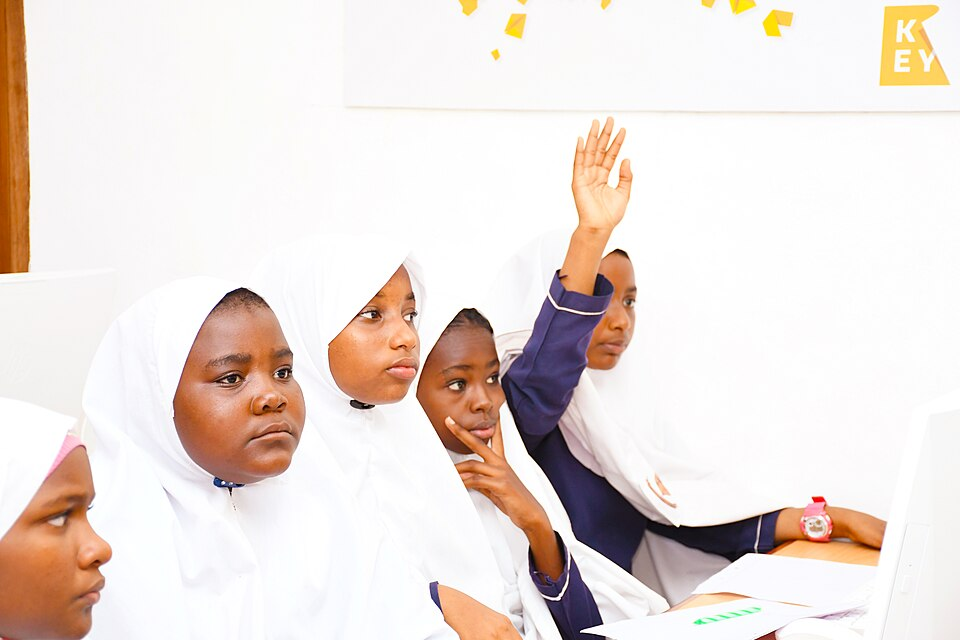
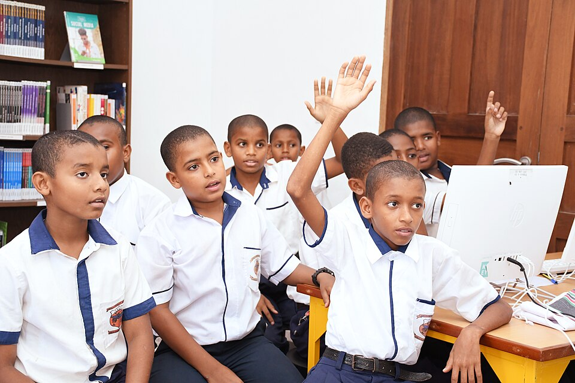

01Talk openly and learn
Hold engaging lessons and student-led campaigns on drug risks, peer pressure, and how to ask for help.
A student wellbeing project
Working together to prevent drug abuse, support students, and make every break time a safer time at Dandora Secondary School.
Every student deserves support, not stigma.
Small steps can make a lasting difference.

01 / Understanding the challenge
Some students may be exposed to drugs during tea break, lunch, or games time—especially around toilets and the playground. Drug use can affect health, attendance, learning, and how safe everyone feels at school.
Peer pressure, stress, limited awareness, access in the community, and gaps in supervision can all play a part. This project responds with understanding, early support, and positive choices—not blame.
02 / What we can do
Prevention works best when students, teachers, families, and the community take part.

01Hold engaging lessons and student-led campaigns on drug risks, peer pressure, and how to ask for help.
Offer a trusted, private place to talk with a trained counsellor, without judgement or shame.
Train student mentors to encourage healthy choices, include others, and connect friends to adult support.
Make clubs, sports, arts, and games easy to join, so students have positive ways to spend free time.
Bring parents and caregivers into regular conversations, mentoring, and practical prevention activities.
Arrange respectful adult presence in toilets, the playground, and other busy areas during breaks.
The photos show African students in school settings. Activities described are proposed project actions.
03 / A starting point
A small household sample helps us ask better questions and plan support that fits the community.
STUDENTS AFFECTED
Counts add affected students within households by the household's reported common drug.
HOUSEHOLD SAMPLE
What the sample tells us: Across 10 households, 16 students were reported as affected. Alcohol and cannabis each account for 6 students (37.5% each), while tobacco accounts for 4 (25%). HH003 has the highest household count, with 3 students. These figures describe this sample only—they are not confirmed school case numbers or a measure of how common drug use is among all students.
Household information was supplied for this project. Protect families' privacy; collect school baselines separately and confidentially before evaluating progress.
04 / Measuring what matters
First collect a confidential baseline. Then review changes each term with students, staff, and families.
A stronger school is possible